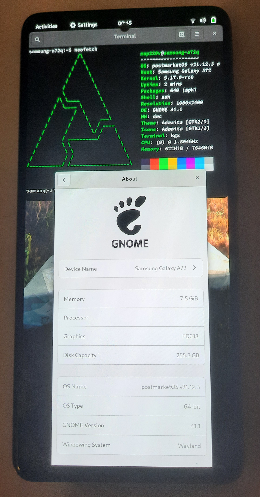

Samsung Galaxy A72 (samsung-a72q)
|
 Samsung Galaxy A72 (samsung-a72q) | |
| Manufacturer | Samsung |
|---|---|
| Name | Galaxy A72 |
| Codename | samsung-a72q |
| Released | 2021 |
| Category | testing |
| Original software | Android 11, OneUI 3.1 |
| Hardware | |
| Chipset | Qualcomm Snapdragon 720G (SM7125) |
| CPU | Octa-core (2x2.3 GHz Kryo 465 Gold & 6x1.8 GHz Kryo 465 Silver) |
| GPU | Adreno 618 |
| Display | 1080x2400 (AMOLED, 6.7") |
| Storage | 128/256 GB |
| Memory | 6/8 GB |
| Architecture | aarch64 |
| Unixbench Whet/Dhry score | 5657.7 |
{kind=link}
| USB Networking |
Works
|
|---|---|
| Flashing |
Works
|
| Touchscreen |
Works
|
| Display |
Partial
|
| WiFi |
Works
|
| FDE | |
| Mainline |
Works
|
| Battery |
Works
|
| 3D Acceleration |
Works
|
| Audio |
Partial
|
| Bluetooth |
Works
|
| Camera | |
| GPS | |
| Mobile data |
Works
|
| SMS |
Works
|
| Calls |
Broken
|
| USB OTG | |
| NFC | |
| Accelerometer | |
|---|---|
| Magnetometer | |
| Ambient Light | |
| Proximity | |
| Hall Effect | |
| Barometer | |
| Power Sensor | |
| Camera Flash | |
|---|---|
| Keyboard | |
| Touchpad | |
| USB-A | |
| HDMI/DP | |
| Ir TX |
Unavailable
|
| Ir RX | |
| Stylus | |
| Haptics | |
| Ethernet | |
| FOSS bootloader | |
|
This device is based on the Qualcomm Snapdragon 720G (SM7125). See the SoC page for common tips, guides and troubleshooting steps |
Contributors
Users owning this device
How to enter flash mode
To enter one of these modes phone must be connected to PC (usb-c headphones and phones might also work)
- Odin Mode: Power on the device with both Volume Up and Volume Down buttons. Then click Volume Up to confirm.
- Recovery: Power on the device with both Power and Volume Up buttons.
Unlocking the Bootloader
!!!WARNING!!!
This will reset your device to Factory settings and blow the Knox E-Fuse! You have been warned.
Samsung made this easy (thankfully): Reboot into Download mode (hold down Vol+ and Vol- while plugging it into a computer) and hold down Vol+.
This way, you can also relock the bootloader (with the only benefit being that the message at the Beginning is gone, no more Knox)
Installation
First, install pmbootstrap.
After that, set up the device to be used:
$ pmbootstrap init
Channel [edge]:
Vendor [samsung]: samsung <- enter this
Device codename [i9100]: a72q <- enter this
Enable this package? (y/n) [y] <- you probably want non-free firmware
User interface [plasma-mobile]: <- choose any UI by your preference. Plasma Mobile works without issues :)
...
Then, create the rootfs image (and install it on sd card if you want)
$ pmbootstrap install (--sdcard=/dev/whatever_your_sdcard_is if you want to install to sd card)
After that, flash the kernel by doing
$ pmbootstrap flasher flash_kernel
and if you didn't install to an SDCard, flash the rootfs by running
$ pmbootstrap flasher flash_rootfs
After installation download emptyDTBO.img and flash using heimdall or TWRP.
Status table explanation
This table explains more in detail why some features are marked as partial (P) or Broken (N). Generally it's because feature works with some limitations, or is a "work-in-progress":
| Component | Status | Notes |
|---|---|---|
| Screen | P | Changing brightness causes graphical artifacts(It's recommended to disable automatic brightness control) |
| Audio | P | Only audio from built in stereo speakers works. |
| Calls | N | Can recieve and make calls but call audio missing. |
Notes
Issues with DEs etc.:
- framebufferphone: has issues with Touch
- xorg: doesn't work/crashes on adreno 618 (wayland/xwayland works fine)
See also
- Mainline kernel
- pmaports!3390 Merge Request for the device
- NotebookCheck Page about the used SOC
- GSMArena page about the phone